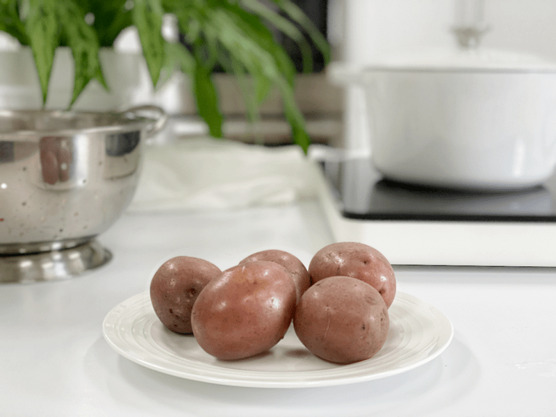
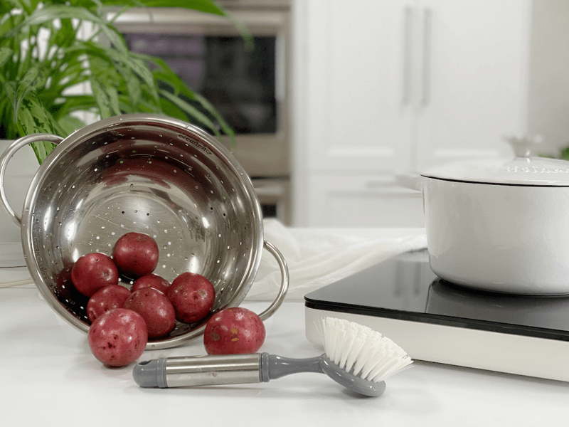
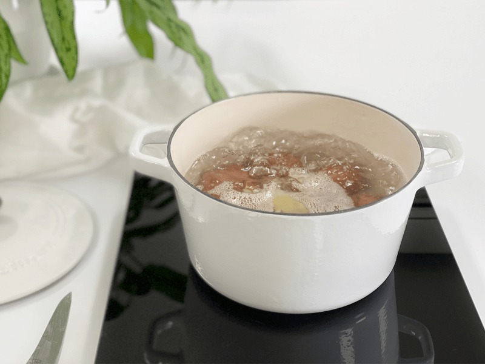
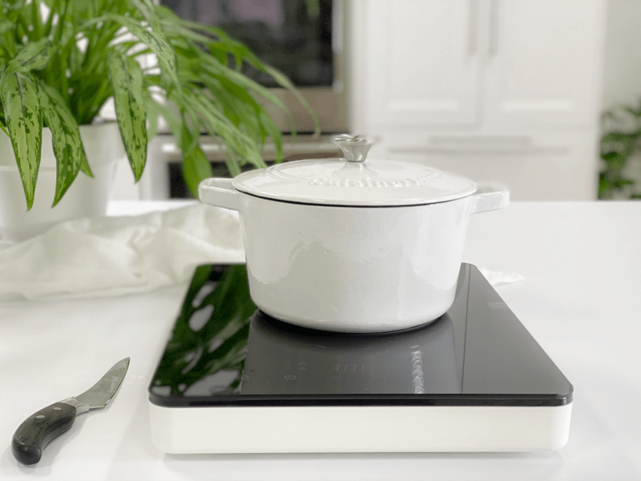
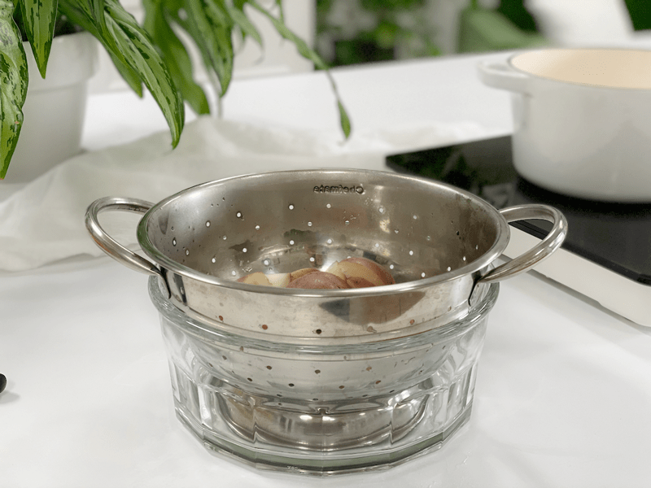
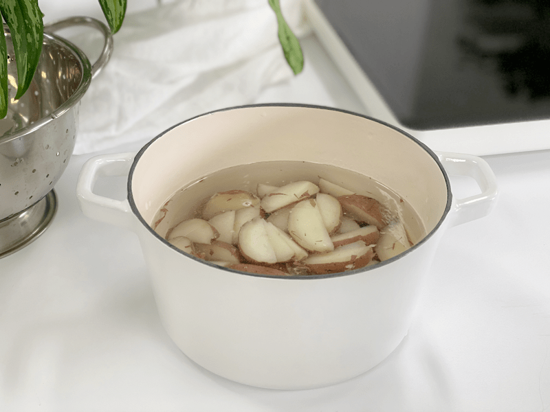

Boiling Potatoes | How to Maximize Nutrients
When baking, steaming, and boiling potatoes, we have several options to maximize the nutrients found within the form-fitting jacket of a potato. I love them cooked in every way possible, but each technique has its purpose. Today, I will be talking about when, how, and why I might boil potatoes.

I know what you are all thinking…who doesn’t know how to boil a potato? Well, to be honest, there are people out there in this big world of ours who don’t, or at the very least don’t understand when it’s appropriate or how to maximize the nutrients when doing so. When I share techniques and recipes on my site it is NEVER with the assumption that every reader automatically knows how to handle ingredients in the kitchen. There is always something to be learned.
 How to Maximize Nutrients
How to Maximize Nutrients
- Boil with the skin on, unless conventionally grown. According to the USDA’s Pesticide Data Program, 35 different pesticides have been found on conventional potatoes. Of these: 6 are known or probably carcinogens, 12 are suspected hormone disruptors, 7 are neurotoxins, and 6 are developmental or reproductive toxins. I bring this up in ALL my potato recipes because I want to really drive this home.
- Boiling potatoes and any other vegetables can lower their nutritional content, such as B and C vitamins. Boiling potatoes with the skin on can help keep nutrients intact.
- Minimizing cooking time can also prevent nutrient loss. Avoid cooking potatoes with high heat for long periods of time.
- Make sure to stop cooking potatoes once they are just tender, not mushy.
- The ONLY time I boil vegetables is when I am going to use the cooking water in the recipe. Using the cooking liquid, like in soup, can help keep the nutrient content up. Otherwise, I steam or bake them.
- When you boil potatoes, heat the water to its boiling point first. This will reduce cooking time and help you maintain the vitamin C content.
Best Potatoes to Use When Boiling
The amount of starch in the potato can affect the texture, so you want to make sure you’re using the right type of potato for the dish you’re making.
- High-starch Potatoes: Potatoes such as the russet or Idaho have a light, mealy texture. Once boiled, they are ideal for mashing.
- Medium-starch Potatoes: Varieties such as the Yellow Finn and Yukon Gold, contain more moisture so they don’t fall apart as easily. They work well for mashing, adding to soups, potato salad, casseroles, and serving as a side dish.
- Low-starch Potatoes: Potatoes such as the round red, round white, and new potatoes, are often called waxy potatoes. They hold their shape better than other potatoes when boiled, making them perfect for potato salads or tossing with seasoned butter as a side dish. Since their skins are so thin, I never peel them.
Preparation
- Scrub the potatoes gently under running water to remove any dirt. Dry with a clean cloth.
- If using large potatoes, I suggest dicing them into 1 1/2″ cubes or wedges. If they are small, I boil them whole.
- If you need to prepare the potatoes in advance and won’t be cooking for a while, place the cut potatoes in cold water and store in the refrigerator. Use within 24 hours.
- Select a pot that is large enough for the number of potatoes you are cooking.
- Add enough cold water to cover the tops of the potatoes.
- You can add sea salt to the cooking water if desired. The potatoes will absorb the salt, enhancing their taste, but it is not required.
- If you want even more flavorful potatoes, consider boiling them in broth or a mixture of broth and water.
- Cook on high to bring the water to a boil, then reduce the heat to medium-low or low, bringing the water to a gentle boil. Cover the pot with a lid.
- Cook for about 15 minutes for small red potatoes, new potatoes, or cubed large potatoes, and 20 to 25 minutes for quartered potatoes.
- They should offer little resistance when done. There should be the same resistance throughout, and they should fall from the knife.
- Place a colander in a large bowl and drain.
- Use the cooking liquid for soup bases or water the garden with it.
- If your recipe calls for cooled potatoes, as with potato salad, run them under cold water or submerge in an ice bath to speed up the cooling process.
- Storage: If cooking the potatoes for future meals, you can store them in the fridge for roughly 3 days.
-

-
Scrub the potatoes and leave the skins on for added nutrients.
-

-
Bring to a boil, then reduce the heat to a slow, gentle boil.
-

-
Cover through the cooking process.
-

-
Drain in a colander to slow down the cooking.
-

-
If dicing or cutting the potatoes, throw them in cold water to prevent discoloration.
© AmieSue.com